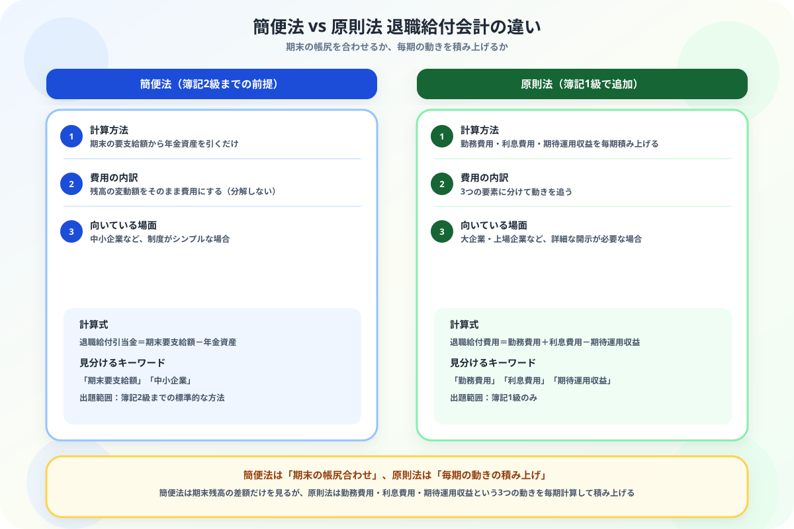

退職給付会計の簡便法と原則法の違いがわからない人へ
「3つの動き」から整理する図解ガイド
- 簡便法は期末の帳尻合わせ——期末要支給額から年金資産を引くだけ
- 原則法は毎期の動きを積み上げる——勤務費用・利息費用・期待運用収益の3つを計算する
- 退職給付費用 ＝ 勤務費用＋利息費用－期待運用収益という式で求める
- 年金資産の有無で「内部積立型」「外部積立型」の2パターンに分かれる
こんにちは、大谷です！
2級で退職給付引当金を勉強したときは「期末の金額から年金資産を引くだけ」というシンプルな話だったのに、1級で急に「勤務費用」「利息費用」「期待運用収益」という聞き慣れない言葉が3つも出てきて、正直「同じ退職給付のはずなのに、なんでこんなに複雑になるの？」と面食らいました。
でも実は、2級の方法（簡便法）は「結果だけ見る」方法で、1級の方法（原則法）は「毎年の変化を1つずつ追いかける」方法という発想の違いだとわかれば、一気に整理できます。今日はそこから一緒に見ていきましょう！
また、記事の末尾のほうにある【いいねボタン】をポチッと押してもらえると、めちゃくちゃ嬉しいです！
❓ 簡便法と原則法——「結果を見るか」「動きを見るか」
簡便法と原則法は、どちらも退職給付引当金・退職給付費用を求める方法ですが、何に注目して計算するかが異なります。

📝 ① 簡便法の計算——2級で学んだ方法のおさらい
期末の退職給付債務（自己都合要支給額）が106,000円、年金資産（外部積立分）がゼロの場合。
簡便法では、勤務費用や利息費用を個別に計算せず、期末時点の要支給額と年金資産の差額をそのまま退職給付引当金とします。
💰 ② 原則法の計算——内部積立型（退職一時金制度のみ）
会社が年金基金を使わず、退職金を自社から直接支払う「内部積立型」の場合です。
期首の退職給付債務100,000円、当期の勤務費用5,000円、割引率3%、当期の退職一時金支払高2,000円。
②退職給付費用：5,000円（勤務費用）＋3,000円（利息費用）＝8,000円
| 取引 | 借方 | 金額 | 貸方 | 金額 |
|---|---|---|---|---|
| 退職給付費用の計上 | 退職給付費用 | 8,000 | 退職給付引当金 | 8,000 |
| 退職一時金の支払 | 退職給付引当金 | 2,000 | 現金預金 | 2,000 |
期末の退職給付引当金は、100,000円（期首）＋8,000円（費用）－2,000円（支払）＝106,000円になります。
🏦 ③ 原則法の計算——外部積立型（企業年金制度を併用）
会社が外部の年金基金にも積み立てている「外部積立型」では、期待運用収益が加わります。
期首の退職給付債務100,000円、期首の年金資産80,000円、当期の勤務費用6,000円、利息費用2,000円（割引率2%）、期待運用収益2,400円（長期期待運用収益率3%）、退職一時金支払額1,000円、掛金拠出額4,000円。
| 取引 | 借方 | 金額 | 貸方 | 金額 |
|---|---|---|---|---|
| 退職給付費用の計上 | 退職給付費用 | 5,600 | 退職給付引当金 | 5,600 |
| 退職一時金の支払 | 退職給付引当金 | 1,000 | 現金預金 | 1,000 |
| 掛金の拠出 | 退職給付引当金 | 4,000 | 現金預金 | 4,000 |
🔍 ④ さらに発展した論点も存在する
実際の年金資産の運用成果が期待運用収益とズレた場合や、退職給付制度の改訂があった場合には、「数理計算上の差異」「過去勤務費用」という差異を一定期間かけて費用処理する仕組みもあります。ただし、これは1級の中でもさらに発展した内容なので、まずは今回の3要素（勤務費用・利息費用・期待運用収益）をしっかり押さえることを優先しましょう。
📋 まとめ：簡便法 vs 原則法 早見表
「状態を見るか、動きを見るか」——この1点で簡便法と原則法はもう混同しません
勤務費用・利息費用・期待運用収益の3つさえ押さえれば、原則法は怖くありません。この記事が「あ、そういうことか！」につながったら、僕の執筆のモチベーション維持のために、この下にある【いいねボタン】をポチッと押してもらえると、めちゃくちゃ嬉しいです！
Study Questで今日の学習時間を記録して、簿記1級合格への一歩を刻んでおきましょう。